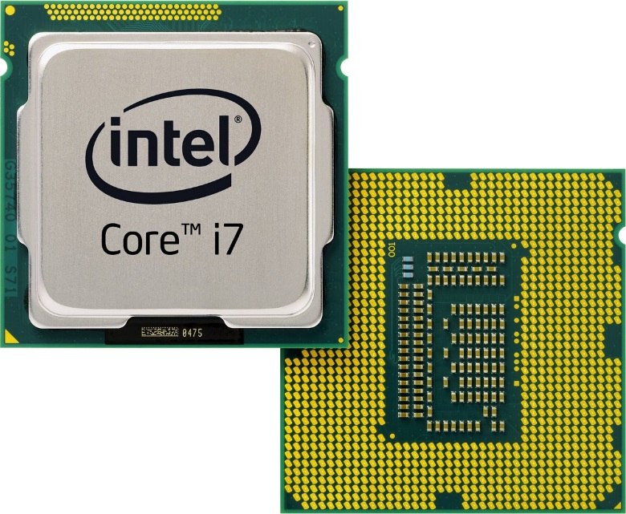
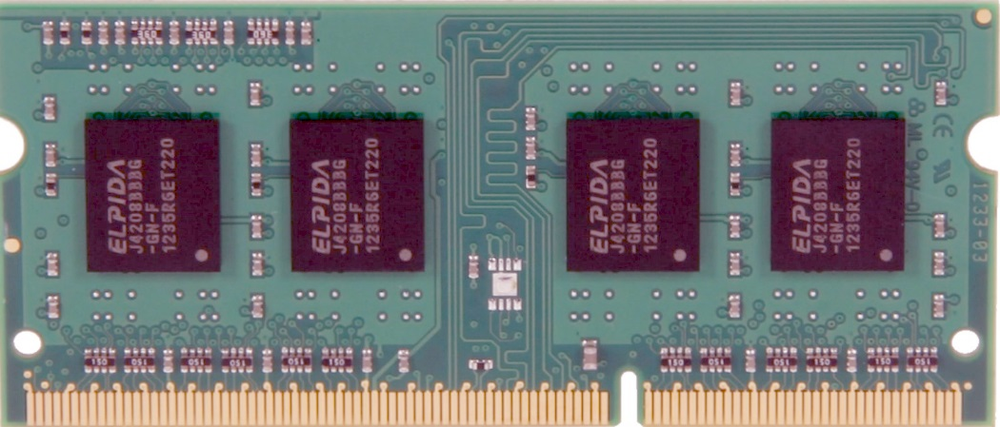
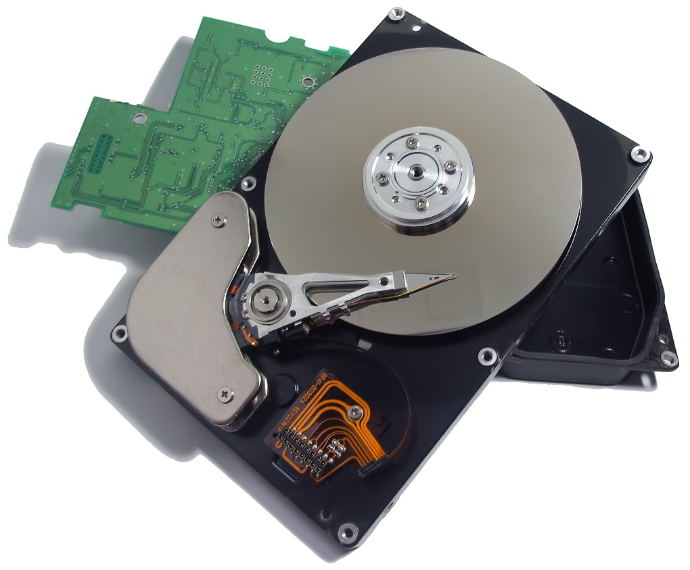
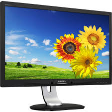
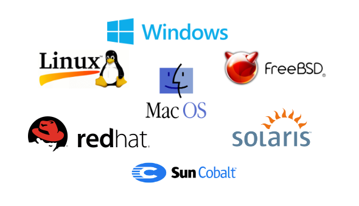

Classes Available

Computer Hardware
Computer hardware includes the physical parts of a computer, such as the case, central processing unit (CPU), monitor, keyboard, computer data storage, graphics card, sound card, speakers and motherboard.
Parts of a Computer Hardware
- Power supply – an electric circuit that converts the electricity coming from an outlet in the wall, usually 115 volts, 60-Hertz alternating current (AC), into electricity that a computer can use, something like 3.3 volts direct current (DC).

- Keyboard – an input device that allows a user to enter data into a computer by pressing keys.
- Motherboard – the main circuit board to which the other parts of a computer are attached. Figure 1-2 shows a motherboard without a CPU, main memory, or other devices attached to it.

- Bus – the wires and integrated circuits that transfer data across the motherboard from one component to another.
- BIOS – acronym for basic input and output system; usually flash memory installed on the motherboard that contains instructions the CPU executes when a computer is started.
- CPU – acronym for central processing unit; a relatively large and expensive integrated circuit where most calculations are done within a computer.
- Cache – a small amount of fast memory that temporarily stores data and instructions and is often located on the CPU.
- Main memory – integrated circuits that temporarily store data and instructions for the CPU; sometimes called random access memory (RAM).
- Hard drive – stores data semi-permanently usually on a spinning platter where microscopic spots have been magnetized to store data.
- Monitor – an output device that displays messages, images, etc. for a user to see.
 - Jump, thumb, or flash drive – semi-permanent memory that can be read, written, and erased electrically. Jump drive, thumb drive, and flash drive are different names for the same type of memory device which stores data in flash memory.
- CD or DVD drive – reads and writes data semi-permanently to a disc using a laser.
Videos
System Software
System software is software designed to provide a platform for other software.
Types of System Software
There are five types of systems software, which are designed to control and coordinate the procedures and functions of computer hardware. Systems software carries out middleman tasks to ensure communication between other software and hardware to allow harmonious coexistence with the user.
- Operating System (OS: An operating system (OS) is system software that manages computer hardware, software resources, and provides common services for computer programs. ) Laptops, tablets, and desktop computers all run operating systems that you've probably heard of. Some examples include versions of Microsoft Windows (like Windows 10, Windows 8, Windows 7, Windows Vista, and Windows XP), Apple's macOS (formerly OS X), Chrome OS, BlackBerry Tablet OS, and flavors of the open source operating system Linux. our smartphone runs an operating system, too, probably either Apple's iOS or Google's Android. Both are household names but you may not have realized that they are the operating systems running on those devices.
- Device Drivers: a device driver is a computer program that operates or controls a particular type of device that is attached to a computer. For example, keyboard, printer and other hardware performed because they have their drivers installed in the computer
- Utilities Software:Utility software is software designed to help to analyze, configure, optimize or maintain a computer. It is used to support the computer infrastructure
- Programming Language Translators: Translators convert a program from one language to another. There are various types of translators such as compiler, interpreter and assembler.
- Firmware: In computing, firmware is a specific class of computer software that provides the low-level control for a device's specific hardware. Typical examples of devices containing firmware are embedded systems, consumer appliances, computers, computer peripherals, and others. Almost all electronic devices beyond the simplest contain some firmware.
Videos
Application Software
Application software is a program or group of programs designed for end users.
Types of System Software
- Word Processor,
- Spreadsheet
- Web Browser
- Email Client
- Media Player
- File Viewer
- Photo Editor
- Accounting Application